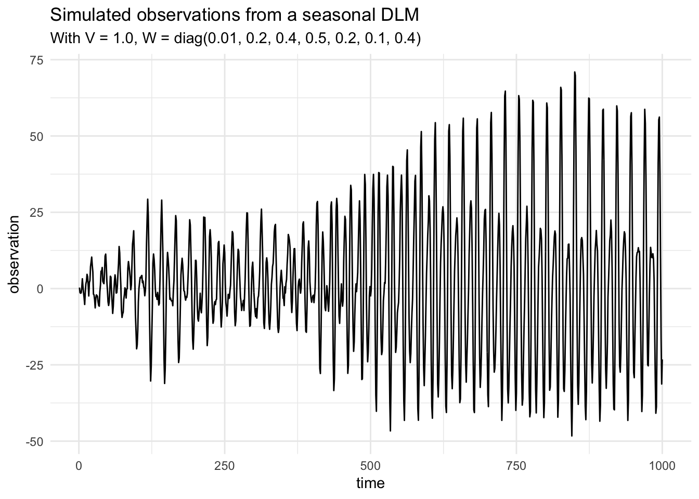
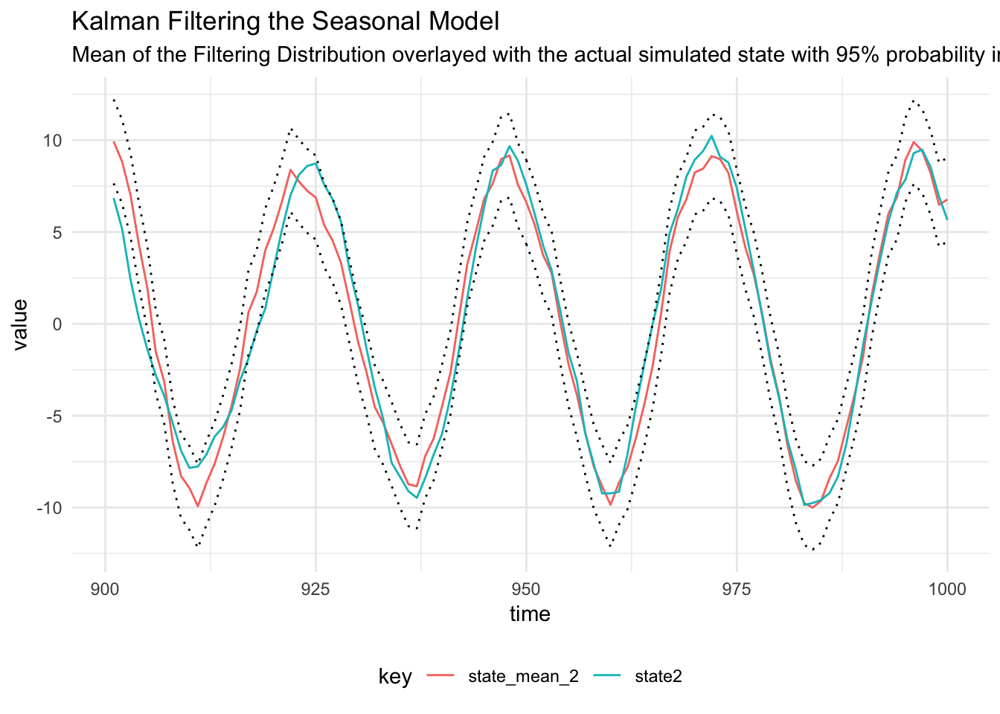

Seasonal DLM
Simulate From a Seasonal DLM
A seasonal DLM is given by:
\[\begin{align*} Y_t | \textbf{x}_t = F \textbf{x}_t + v_t, \quad v_t \sim \mathcal{N}(0, V) \\ X_t | \textbf{x}_{t-1} = G \textbf{x}_t + w_t, \quad w_t \sim \mathcal{N}(0, W) \\ X_y \sim \mathcal{N}(m_0, C_0) \end{align*}\]
Where the system evolution matrix is block diagonal, containing rotation matrices. If we define \(T\) to be the period of the seasonality then the frequency is, \(\omega = 2\pi/T\), a rotation matrix for the \(h^{\textrm{th}}\) harmonic in the system evolution matrix is given by:
\[R(h, \omega) = \begin{pmatrix}\cos(h\omega) & -\sin(h\omega) \\ \sin(h\omega) & \cos(h\omega) \end{pmatrix}\]
Then the system matrix is:
\[G = \begin{pmatrix} R(1, \omega) & 0 & \dots & \dots & 0 \\ 0 & R(2, \omega) & 0 & \dots & 0\\ \vdots & 0 & \ddots & &\vdots \\ 0 & \dots & 0 & R(h, \omega) \end{pmatrix}.\]
The observation matrix is \(1 \times 2h\) dimensional:
\[F = \begin{pmatrix}1 & 0 & 1 & \dots & 1 & 0 \end{pmatrix}.\]
We can specify a seasonal model with trend using:
scala> import dlm.model._
import dlm.model._
scala> import cats.implicits._
import cats.implicits._
scala> val mod = Dlm.polynomial(1) |+| Dlm.seasonal(24, 3)
mod: dlm.model.Dlm.Model = Model(<function1>,<function1>)Then we can simulate from the model by supplying parameters and use the provided simulate function:
scala> import breeze.linalg.{DenseMatrix, DenseVector, diag}
import breeze.linalg.{DenseMatrix, DenseVector, diag}
scala> val p = Dlm.Parameters(
| v = DenseMatrix((1.0)),
| w = diag(DenseVector(0.01, 0.2, 0.4, 0.5, 0.2, 0.1, 0.4)),
| m0 = DenseVector.fill(7)(0.0),
| c0 = diag(DenseVector.fill(7)(1.0))
| )
p: dlm.model.Dlm.Parameters =
Parameters(1.0 ,0.01 0.0 0.0 0.0 0.0 0.0 0.0
0.0 0.2 0.0 0.0 0.0 0.0 0.0
0.0 0.0 0.4 0.0 0.0 0.0 0.0
0.0 0.0 0.0 0.5 0.0 0.0 0.0
0.0 0.0 0.0 0.0 0.2 0.0 0.0
0.0 0.0 0.0 0.0 0.0 0.1 0.0
0.0 0.0 0.0 0.0 0.0 0.0 0.4 ,DenseVector(0.0, 0.0, 0.0, 0.0, 0.0, 0.0, 0.0),1.0 0.0 0.0 0.0 0.0 0.0 0.0
0.0 1.0 0.0 0.0 0.0 0.0 0.0
0.0 0.0 1.0 0.0 0.0 0.0 0.0
0.0 0.0 0.0 1.0 0.0 0.0 0.0
0.0 0.0 0.0 0.0 1.0 0.0 0.0
0.0 0.0 0.0 0.0 0.0 1.0 0.0
0.0 0.0 0.0 0.0 0.0 0.0 1.0 )
scala> val sims = Dlm.simulateRegular(0, mod, p).
| steps.
| take(1000).
| toArray
sims: Array[(dlm.model.Data, breeze.linalg.DenseVector[Double])] = Array((Data(1.0,Some(DenseVector(0.37853218606790606))),DenseVector(0.05811076400914117, 0.35564961749897894, 0.0051601381581495185, 0.39458587626099634, -0.7884362770657393, 0.03359910124607154, -0.02679424590741779)), (Data(2.0,Some(DenseVector(-1.087602900837703))),DenseVector(0.028337547473018893, 0.1880745728663083, 0.5109452401667003, 0.3641459879898321, 0.09698725691906179, -0.03358353565980257, 0.2524558290885483)), (Data(3.0,Some(DenseVector(0.6768210341942604))),DenseVector(0.018664050275622363, -0.31280612303923117, 0.9282362475164767, 0.3897894582558882, -0.24742256122512052, -0.6678948608844156, 0.4094036622463147)), (Data(4.0,Some(DenseVector(0.8198454846245249))),DenseVector(0.03825238068337537, -0.9008194...
Plot the states:

Filtering
We can perform Kalman Filtering, to learn the distribution of the latent state given the data we have simulated:
scala> val filtered = KalmanFilter.filter(mod, sims.map(_._1), p)
filtered: Array[dlm.model.KalmanFilter.State] =
Array(State(0.0,DenseVector(0.0, 0.0, 0.0, 0.0, 0.0, 0.0, 0.0),1.0 0.0 0.0 0.0 0.0 0.0 0.0
0.0 1.0 0.0 0.0 0.0 0.0 0.0
0.0 0.0 1.0 0.0 0.0 0.0 0.0
0.0 0.0 0.0 1.0 0.0 0.0 0.0
0.0 0.0 0.0 0.0 1.0 0.0 0.0
0.0 0.0 0.0 0.0 0.0 1.0 0.0
0.0 0.0 0.0 0.0 0.0 0.0 1.0 ,DenseVector(0.0, 0.0, 0.0, 0.0, 0.0, 0.0, 0.0),1.0 0.0 0.0 0.0 0.0 0.0 0.0
0.0 1.0 0.0 0.0 0.0 0.0 0.0
0.0 0.0 1.0 0.0 0.0 0.0 0.0
0.0 0.0 0.0 1.0 0.0 0.0 0.0
0.0 0.0 0.0 0.0 1.0 0.0 0.0
0.0 0.0 0.0 0.0 0.0 1.0 0.0
0.0 0.0 0.0 0.0 0.0 0.0 1.0 ,None,None,0.0), State(1.0,DenseVector(0.06580335764691654, 0.07818220710524737, 0.0, 0.09772775888155921, 0.0, 0.0716670231798101, 0.0),0.83442340...
Smoothing
Kalman Smoothing can be performed:
scala> val smoothed = Smoothing.backwardsSmoother(mod)(filtered)
smoothed: Array[dlm.model.Smoothing.SmoothingState] =
Array(SmoothingState(0.0,DenseVector(0.2400095008799686, -0.07609910918054139, 0.20021487955593067, -0.07396845972615765, -0.05066157940081897, -0.02443015610737022, 0.04589007827640945),2.202720025657208 -0.21014675797618404 ... (7 total)
-0.6063092608009367 0.8223020876274192 ...
0.2859207744476965 0.08449550252322074 ...
-0.3093228122380814 -0.11426829331252988 ...
0.3031639608726415 0.1278833438606577 ...
-0.21034321904467557 -0.054407578401991855 ...
0.28692083275407965 0.14454294143878613 ...,DenseVector(0.0, 0.0, 0.0, 0.0, 0.0, 0.0, 0.0),1.0 0.0 0.0 0.0 0.0 0.0 0.0
0.0 1.0 0.0 0.0 0.0 0.0 0.0
0.0 0.0 1.0 0.0 0.0 0.0 0.0
0.0 0.0 0.0 1.0 0.0 0.0 0.0
0.0 0.0 ...
Parameter Learning using Gibbs Sampling
The system matrix \(W\) is diagonal, hence the Inverse Gamma distribution can be used for the observation and system noise matrices in a Gibbs Sampler. The state is sampled using Forward Filtering Backward Sampling (FFBS), then conditional on the state, the system and observation noise matrices are sampled from Inverse Gamma distributions.
scala> val iters = GibbsSampling.sample(
| mod,
| InverseGamma(5.0, 4.0),
| InverseGamma(17.0, 4.0),
| p,
| sims.map(_._1))
iters: breeze.stats.distributions.Process[dlm.model.GibbsSampling.State] = breeze.stats.distributions.MarkovChain$$anon$1@74801926The diagnostic plots are below:

Traceplot and running mean for posterior distribution of the observation variance parameter, \(V\)

Diagnostic plots for the MCMC chain representing draws from the posterior distribution of the System noise covariance matrix for the simulated seasonal model
Forecast DLM
Forecasting a DLM is equivalent to running the Kalman Filter without any observations at the time of interest. We initialise the forecast by using the posterior distribution of the latent state at the time of the last observation, \(x_T \sim \mathcal{N}(m_T, C_T)\) and use the values of the parameters identified using Gibbs sampling.
First we take the mean value of the MCMC parameters, assuming that the parameters have been written to a CSV called seasonal_dlm_gibbs.csv with eight columns, \(V, W_1,\dots,W_7\):
scala> import java.nio.file.Paths
import java.nio.file.Paths
scala> import kantan.csv._
import kantan.csv._
scala> import kantan.csv.ops._
import kantan.csv.ops._
scala> import breeze.stats.mean
import breeze.stats.mean
scala> val mcmcChain = Paths.get("data/seasonal_dlm_gibbs.csv")
mcmcChain: java.nio.file.Path = data\seasonal_dlm_gibbs.csv
scala> val read = mcmcChain.asCsvReader[List[Double]](rfc.withHeader)
read: kantan.csv.CsvReader[kantan.csv.ReadResult[List[Double]]] = kantan.codecs.resource.ResourceIterator$$anon$6@67c5d28f
scala> val params: List[Double] = read.
| collect { case Success(a) => a }.
| toList.
| transpose.
| map(a => mean(a))
params: List[Double] = List(0.8845079756307068, 0.14898898017307993, 0.2796182358596836, 0.28173619914799153, 0.2758751247272198, 0.2816157274900601, 0.2519573345917604, 0.24110852919544112)
scala> val meanParameters = Dlm.Parameters(
| DenseMatrix(params.head),
| diag(DenseVector(params.tail.toArray)),
| p.m0,
| p.c0)
meanParameters: dlm.model.Dlm.Parameters =
Parameters(0.8845079756307068 ,0.14898898017307993 0.0 0.0 ... (7 total)
0.0 0.2796182358596836 0.0 ...
0.0 0.0 0.28173619914799153 ...
0.0 0.0 0.0 ...
0.0 0.0 0.0 ...
0.0 0.0 0.0 ...
0.0 0.0 0.0 ...,DenseVector(0.0, 0.0, 0.0, 0.0, 0.0, 0.0, 0.0),1.0 0.0 0.0 0.0 0.0 0.0 0.0
0.0 1.0 0.0 0.0 0.0 0.0 0.0
0.0 0.0 1.0 0.0 0.0 0.0 0.0
0.0 0.0 0.0 1.0 0.0 0.0 0.0
0.0 0.0 0.0 0.0 1.0 0.0 0.0
0.0 0.0 0.0 0.0 0...When then use these parameters to get the posterior distribution of the final state:
scala> val filtered = KalmanFilter.filter(mod, sims.map(_._1), meanParameters)
filtered: Array[dlm.model.KalmanFilter.State] =
Array(State(0.0,DenseVector(0.0, 0.0, 0.0, 0.0, 0.0, 0.0, 0.0),1.0 0.0 0.0 0.0 0.0 0.0 0.0
0.0 1.0 0.0 0.0 0.0 0.0 0.0
0.0 0.0 1.0 0.0 0.0 0.0 0.0
0.0 0.0 0.0 1.0 0.0 0.0 0.0
0.0 0.0 0.0 0.0 1.0 0.0 0.0
0.0 0.0 0.0 0.0 0.0 1.0 0.0
0.0 0.0 0.0 0.0 0.0 0.0 1.0 ,DenseVector(0.0, 0.0, 0.0, 0.0, 0.0, 0.0, 0.0),1.0 0.0 0.0 0.0 0.0 0.0 0.0
0.0 1.0 0.0 0.0 0.0 0.0 0.0
0.0 0.0 1.0 0.0 0.0 0.0 0.0
0.0 0.0 0.0 1.0 0.0 0.0 0.0
0.0 0.0 0.0 0.0 1.0 0.0 0.0
0.0 0.0 0.0 0.0 0.0 1.0 0.0
0.0 0.0 0.0 0.0 0.0 0.0 1.0 ,None,None,0.0), State(1.0,DenseVector(0.07446211409884738, 0.08292775712017399, 0.0, 0.08268517866812634, 0.0, 0.08113514707618665, 0.0),0.9229681...
scala> val (mt, ct, initTime) = filtered.map(a => (a.mt, a.ct, a.time)).last
mt: breeze.linalg.DenseVector[Double] = DenseVector(3.1392595732137902, -0.15216093866250535, -5.692758776168203, -1.234877590180563, 11.637056307283837, 3.7319774365161087, 3.2993882181639296)
ct: breeze.linalg.DenseMatrix[Double] =
1.4824923547284103 -0.5079954882956018 -0.9844789894569338 ... (7 total)
-0.5079954882956017 2.3938974914696387 -0.3161714269117561 ...
-0.9844789894569342 -0.31617142691175604 3.2787915997106905 ...
-0.4705834380671068 -0.9062770408728755 0.8922250858640552 ...
-0.2975488930219069 -0.9560703098100984 -0.1781542556845435 ...
-0.3476505885453832 -0.6942286459009825 0.30571047004505203 ...
0.06742023869212262 0.02013481934000952 -0.2811795486093878 ...
initTime: dlm.model.Time = 1000.0We then initialise the forecast function with state state posterior at the time of the last observation:
scala> val forecasted = Dlm.forecast(mod, mt, ct, initTime, meanParameters).
| take(100).
| toList
forecasted: List[(dlm.model.Time, Double, Double)] = List((1000.0,5.48419848088683,1.60512413134061), (1001.0,-6.76334702289072,964.5423462993369), (1002.0,4.5367965986221375,1919.5370269888276), (1003.0,13.366284157726469,2885.383255540375), (1004.0,-8.14094967767946,3852.8401892725688), (1005.0,11.239908127768334,4789.02559567327), (1006.0,10.337446744884856,5755.52830011983), (1007.0,5.096553132055927,6711.793895470083), (1008.0,5.096553132055927,7675.885088224641), (1009.0,10.337446744884849,8640.049417014416), (1010.0,11.23990812776836,9600.134617647604), (1011.0,-8.140949677679439,10582.600354655138), (1012.0,13.366284157726412,11560.676778282743), (1013.0,4.5367965986222,12513.907668438816), (1014.0,-6.763347022890732,13472.208337275617), (1015.0,5.484198480886894,14428.348233815...The results of the forecasting and 95% prediction intervals are below: